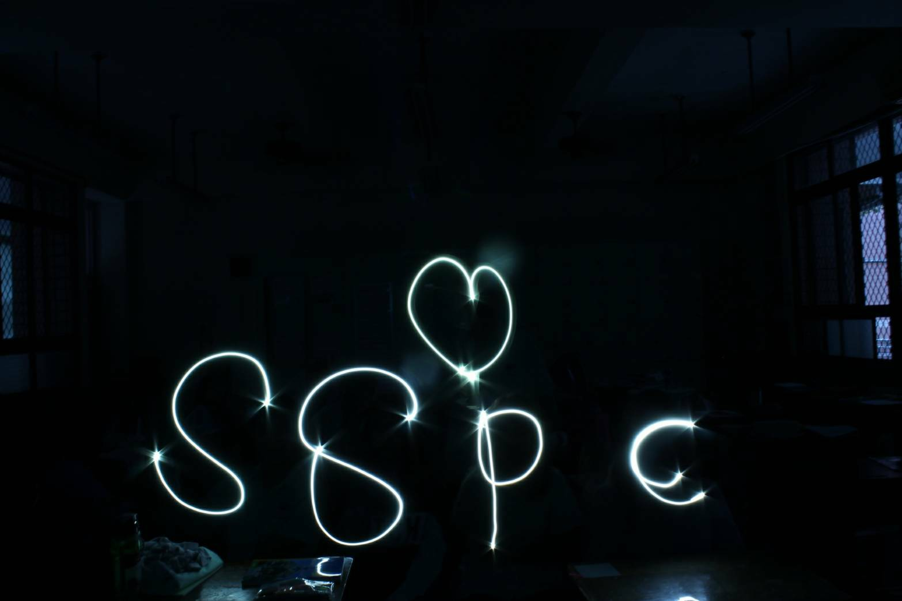

Freezing every little moment
──淞霧攝影社
其實在十多年前，松山高中也曾有過攝影社，但後來因為經營不善漸漸被大傳社所取代，直到今年才由一群擁有熱情和理想的高二成員們再次創立。

社長以前就有接觸攝影相關領域，也對靜態攝影抱有興趣，但來到松山後發現沒有專精這方面的社團，便萌生出創立新社團的想法，另一方面也是想實踐自己對社團管理上的一些理念，透過較輕鬆自由的方式來培養成員間的感情，並希望這會成為一個所有成員都有機會發光發熱的社團。
若是要創建新的社團，第一個條件就是必須招收到十五位以上有興趣加入的成員，社長一開始時在班上僅邀請到八個人加入，於是開始極力招募更多夥伴，遇到認識的同學便積極大力宣傳，最後入社的人數甚至比預期中的還要多。在社團運作方面，因為沒有學長姐的帶領，難免感到手忙腳亂。剛開始幹部們不太確定自己的工作範圍，過了一段時間大家才開始漸漸了解每個人的職責所在，合作也越來越...
此為部分內容，更多關於攝影社的介紹就在松山青年29期校刊《浮生抗世》